Experiment result
Critical difference
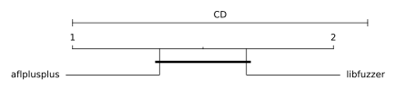
Micro-benchmark Critical difference
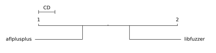
| Fuzzer | Rank |
|---|
| aflplusplus | 1.32 |
| libfuzzer | 1.65 |
Overall (ranking by edges covered)
- aflplusplus (65,072 edges covered), success rate: 18.86%(56/297 pairs)
- libfuzzer (55,594 edges covered), success rate: 9.73%(29/298 pairs)
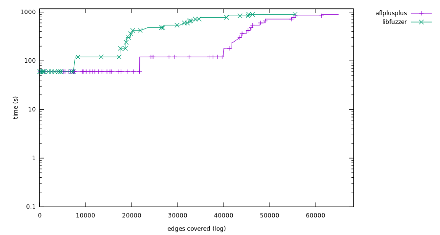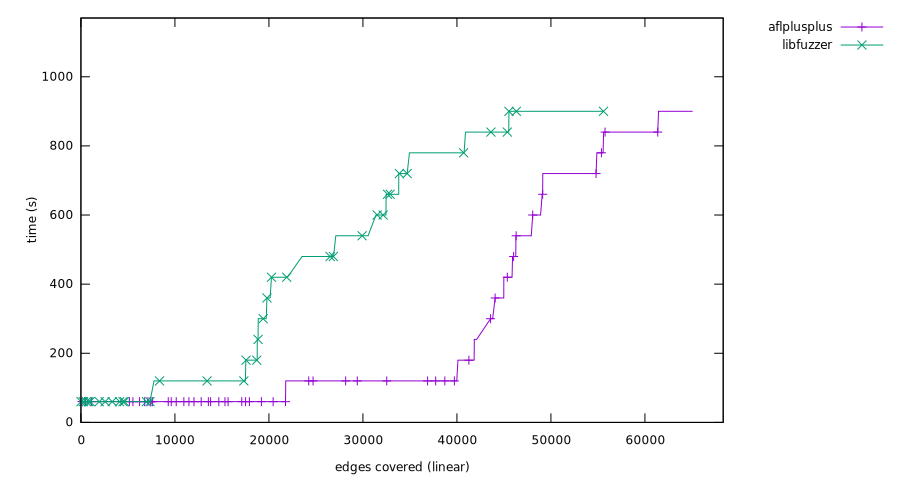
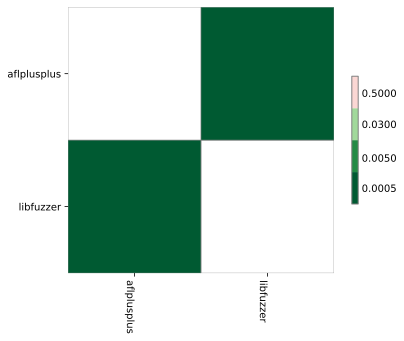
bloaty_fuzz_target
Ranking
- aflplusplus, (9,403 edges covered), success rate: 3.00%(3/100 pairs)
- libfuzzer, (6,082 edges covered), success rate: 2.02%(2/99 pairs)
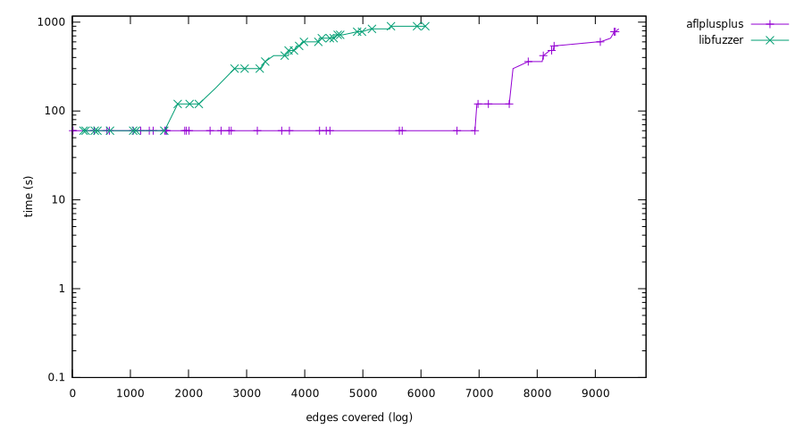 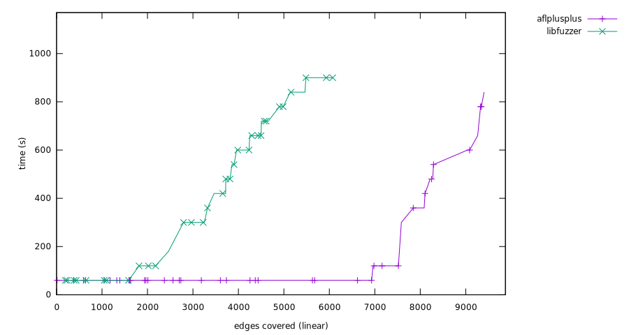
Mann-Whitney U test
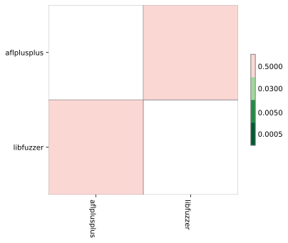
libjpeg-turbo-07-2017
Ranking
- aflplusplus, (10,541 edges covered), success rate: 33.33%(33/99 pairs)
- libfuzzer, (3,282 edges covered), success rate: 9.00%(9/100 pairs)
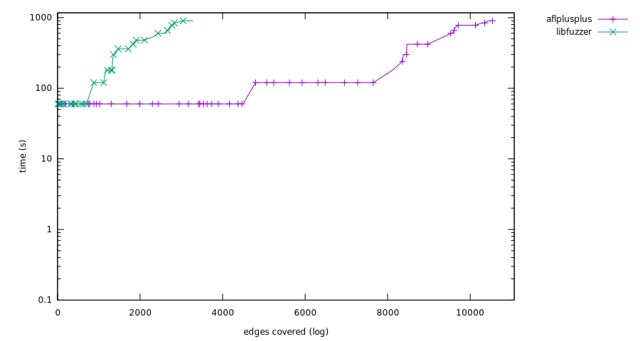 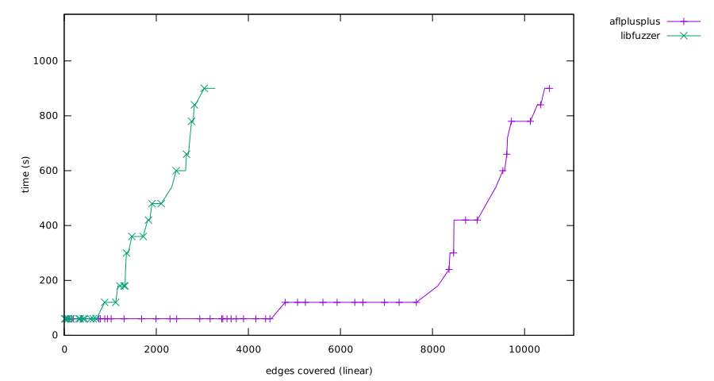
Mann-Whitney U test
sqlite3_ossfuzz
Ranking
- libfuzzer, (46,230 edges covered), success rate: 18.18%(18/99 pairs)
- aflplusplus, (45,128 edges covered), success rate: 20.41%(20/98 pairs)
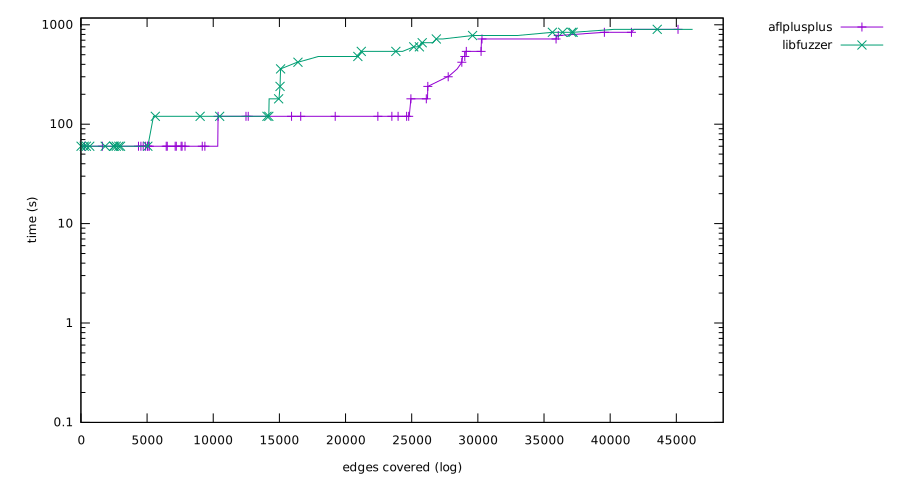 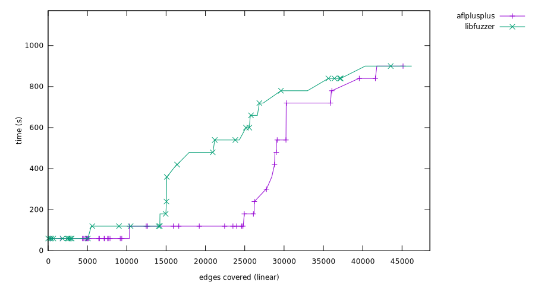
Mann-Whitney U test
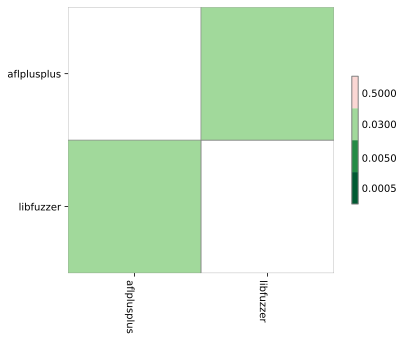